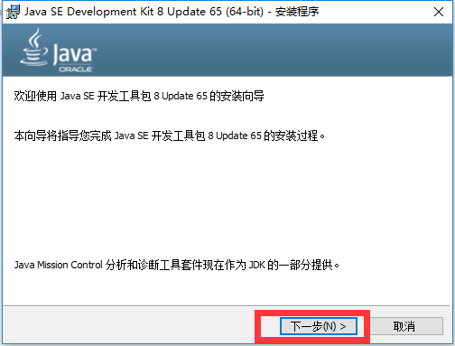

原文连接:https://www.cnblogs.com/evolve/p/11837869.html
一、什么是JDK,JRE
在安装之前我们先了解下JDK与JRE.
简单来讲，JDK是Java语言的软件开发工具包，我们使用JDK所提供的开发工具完成对java程序的开发；JRE是运行Java程序锁必须的环境，使用JRE运行开发好的java应用程序。
· JDK(Java Development Kit Java开发工具包)：JDK是提供给Java开发人员使用的，其中包含了java的开发工具，也包括JRE。所以安装了JDK,就不用再单独安装JRE了。
· JRE(Java Runtime Environment Java运行环境)：包括Java虚拟机（JVM：Java Virtual Machine）和Java程序所需的核心类库等，如果想要运行一个开发好的Java程序，计算机中只需要安全JRE即可。
二、下载、安装JDK
· 官方网址：https://www.oracle.com/technetwork/java/javase/downloads/index.html
· 进去之后界面如下
· 点击JDK Download进入详细的下载页,然后把Accepet License Agreement勾上,系统如果是32位的就选windowsx86，系统是64位的选windowsx64的。
·下载好以后就可以进行一直下一步的傻瓜式安装了

注：安装路径不要有中文或者特殊符号如空格等。
当提示安装JRE时，可以选择不安装。
如果是自定义安装，安装的路径一定要记住。
·下面演示的是自定义安装，win10操作系统，JDK1.8版本安装。
1、点击下一步
2、点击更改安装路径

3、在D盘下依次新建Java和Java下的jdk1.8.0_65文件夹（自己安装想在什么盘选择什么盘）
4、建好后点击确定 。然后点击下一步
5、耐心等待安装。这里弹出是否安装JRE，正如前面所说，JDK包含有JRE如果不想安装则叉掉，如果想安装，在刚刚创建的Java文件夹中新建一个名为jre1.8.0_65的文件夹.。然后点击下一步
6、耐心等待安装完成。
7、安装完成后，点击关闭
三、环境变量配置
为了方便java程序的开发，我们需要配置一下环境变量。右击此电脑>属性>高级系统设置>环境变量>单击[新建(W)]添加以下环境变量
1、配置JAVA_HOME
新建JAVA_HOME
变量名 JAVA_HOME
变量值 D:\Java\jdk1.8.0_6 你的jdk的安装地址
2.配置CLASSPATH
新建CLASSPATH
变量名 CLASSPATH
变量值 .;%JAVA_HOME%\lib\dt.jar;%JAVA_HOME%\lib\tools.jar

3.配置PATH （追加）
在PATH变量最后面添加两条变量值
变量名 Path
变量值 %JAVA_HOME%\bin
变量值 %JAVA_HOME%\jre\bin
注意，这里之所以没有在开头和前面加 ; 是因为win10系统加了，这两个变量就会被默认用引号引起来，导致javac命令不存在。若是win7还是得加的
示范加的情况：
可以看出导致出现双引号，被注释掉了
不添加：
可以看出javac测试正确出来

4.测试是否成功安装
分别输入javac和java -version 查看当前java选项和java的版本，可以查看则代表安装成功